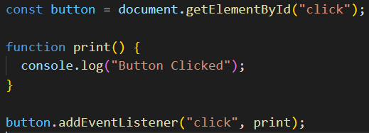

What is DOM and what is the purpose of DOM?
DOM is an programming interface for HTML document. When a web page loads on browser, that html document get converted into a DOM tree. DOM defines the events for all html documents, method to access all html elements, the properties of all html documents and all html elements as an object.
We can use DOM to manipulate html and css elements, also we can react to events. We can do below things using DOM:
- Change all the HTML elements in the page.
- Change all the HTML attributes in the page.
- Change all the CSS styles in the page.
- Remove existing HTML elements and attributes.
- Add new HTML elements and attributes.
- React to all existing HTML events in the page.
How will you select HTML elements using DOM? Name the DOM methods.
We can select html elements in 4 ways. These are:
- getElementById()
- getElementsByClassName()
- getElementsByTagName()
- querySelector() & querySelectorAll()
If we want a single item in DOM, then we can use getElementById() method, it will require an unique id as parameter. By using getElementsByClassName, we can get an array-like object which contains all the child element of the given class name. We can traverse the array-like object by index. Similarly, we can get all the elements of the same tag name. querySelectorAll will return a node list and querySelector will return first matching element.
What is event bubble?
Event Bubbling is a concept in the DOM (Document Object Model). It happens when an element receives an event, and that event bubbles up (or you can say is transmitted or propagated) to its parent and ancestor elements in the DOM tree until it gets to the root element.

What is a callback function and why will you use it?
After searching on google, I understood that a callback function is accessible by other functions, a function passed into another function as an argument, and invoked after first function if that first function completes. I tried to implement callback function in event listener.
Inside this program, I've used print function as a callback function. I passed this function as a parameter of another function.